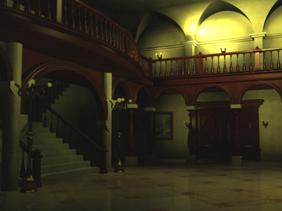
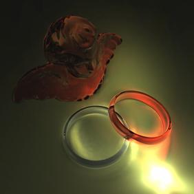
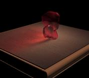
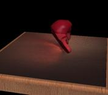

|
Is There Anything Comparable to Spherical Harmonics But Simpler?
Tien-Tsin Wong
and
Chi-Sing Leung
, |


Abstract
-
- This lecture introduces a computationally more efficient, mathematically simpler, and visually identical substitute to spherical harmonics (SH). It is spherical radial basis function (SRBF). It represents lighting including soft shadow, caustics, interreflection, HDR environment map, and other global illumination like effects. It naturally supports both local illumination (point and directional sources) as well as lighting under distant environment (integration of lighting contributions over a spherical environment). The lecture covers the underlying mathematics (which shows simplicity), describes its implementation (which exhibits its computational efficiency), and demonstrates the visual results (which shows its comparability). We also present the mathematics for obtaining the noise-proof SRBF coefficients, so that compression (that introduces quantization noises) can be applied on them to achieve a compact solution for sophisticated lighting effects. A set of tools and hacks is provided and explained to achieve various lighting effects and real-time performance. It can be shown that all lighting effects by SH are achievable with SRBF, including the tricky rotation.
Download Presentation
- Acrobat:
srbf.pps (size: 30MB) (Version 1.2, released on 12 March 2007)
Download Source Code
Some Results
 
Figure 1. House.
 
Figure 2. Ring.
  
Figure 3.
Caustics cast by the crystal angel.
{kind=link}
{kind=link}
Figure 4. Diffuse teapot
illuminated in a HDR environment (Grace).


Figure 5. An anisotropic
teapot illuminated in a HDR environment (Grace).
Related Publications
- "An RBF-based Image Compression Method for Image-based Rendering",
C. S. Leung, T. T. Wong, P. M. Lam and K. H. Choy,
IEEE Transactions on Image Processing, Vol. 15, No. 4, April 2006, pp. 1031-1041. - "Lighting Precomputation Using the Relighting Map",
T. T. Wong, C. S. Leung and K. H. Choy,
Shader X3: Advanced Rendering with Direct X and OpenGL, Edited by W. Engel, Charles River Media, 2005, pp. 379-392.